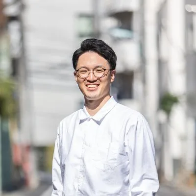
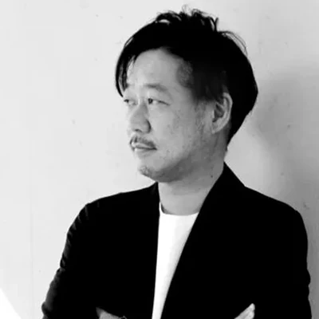
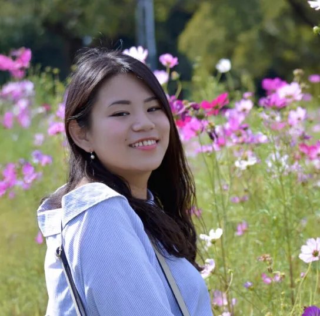
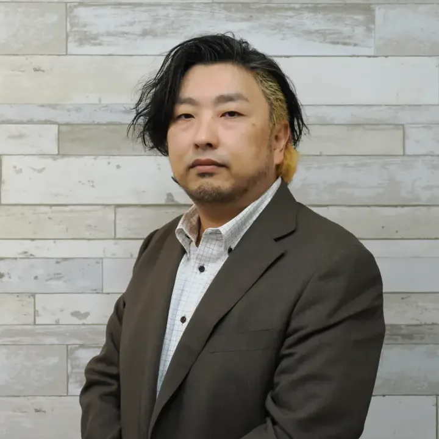
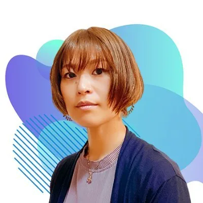
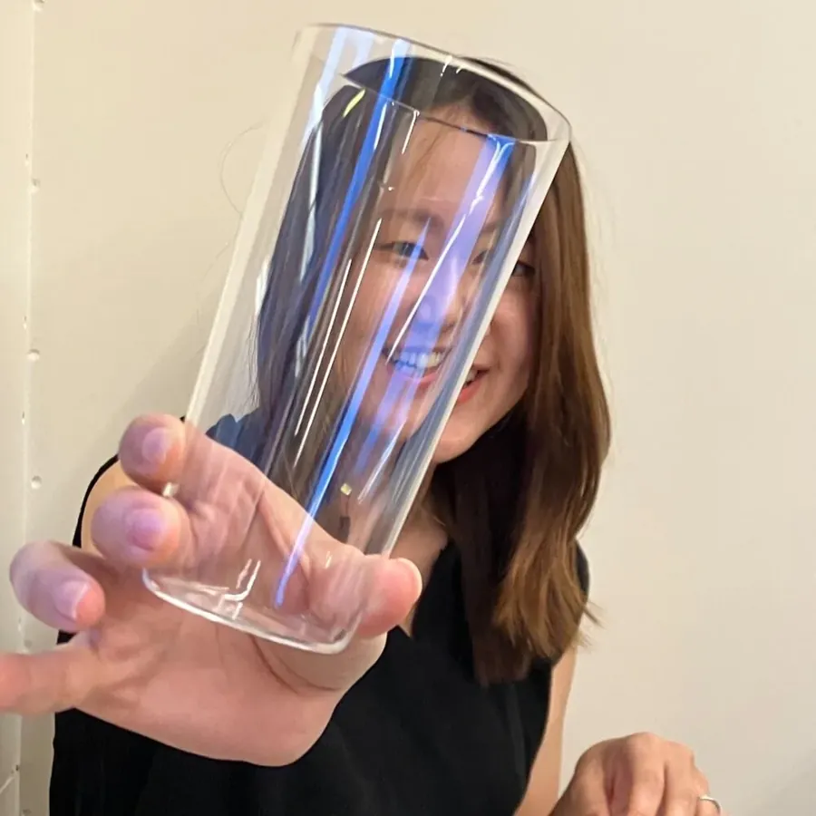

中島 勝悟（なしょ）
会長
熊本県出身 群馬県在住｜まるみデザインファーム｜合同会社ゆらり←フリーランスデザイナー←デジLIG’22/8卒←自動車部品工場生産技術職
MEMBER
DiSA全体の企画・運営を行うメンバー。ディレクター、デザイナー、エンジニアなど参画中。
MEMBER LIST

会長
熊本県出身 群馬県在住｜まるみデザインファーム｜合同会社ゆらり←フリーランスデザイナー←デジLIG’22/8卒←自動車部品工場生産技術職
副会長
Webディレクター兼UXデザイナー。Web・情報設計とUXが主戦場。「知識は足し算、アイディアは掛け算」を信条に、最良のクリエイティブを。

事務局長
Web・IT企業の採用・組織支援。3,000名の対話実績に基づく「目利き」と「仕組み化」で、人材ミスマッチを防ぎ、事業成長を裏から支えます。

CTO
チャレンジ精神旺盛なデザインエンジニア。「自分のしあわせの先に人のしあわせ」をモットーに、Web制作や技術メンターとして全力で課題解決！

COO
Studio FireColor／IMAKE役員。Web・動画・システム・料理まで操るゼネラリスト。制作から教育、組織デザインまで全方位でモノ作りを追求。

CDO
SaaSプロダクトのUI/UXデザイナー。開発・運用・内製化、PdM/PMサポートまで幅広く担当。フレキシブルな対応を信条に、キャリア講義も実施。
師匠
UI/UXから印刷物まで幅広く手掛けるデザイナー。金融系開発や教育にも携わり、現在は女子美術大学で非常勤講師を兼任。製作者と教育者の両面からデザインに従事。

神の声
デザイナーを経て、合同会社ゆらり代表として独立。Web、アプリなどのクリエイティブ制作を中心に活動中。クラフトジンの開発も行っている。

PR
一般社団法人ディレクションサポート協会（DiSA）広報やってますうし3号です。note、X、YouTubeなどメディア周りに登場したりします。